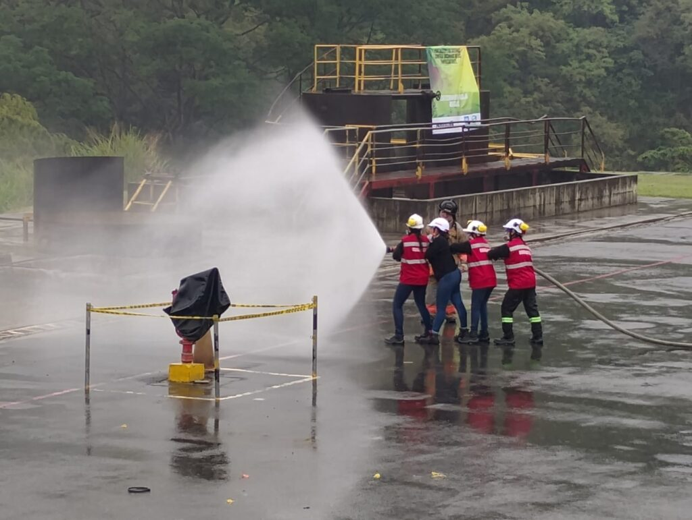

Servicios
¿Qué impacto tienen las brigadas?
- Primeros auxilios: brindan atención inicial a las personas lesionadas, coordinan la asistencia médica necesaria, apoyan el traslado de heridos y garantizan la disponibilidad de equipos e insumos para la atención.
- Evacuación: orientan y coordinan la salida ordenada y segura de las personas hacia zonas seguras, verificando que todos abandonen las áreas afectadas y reportando cualquier novedad.
- Control de incendios: identifican riesgos de incendio, conocen el uso de los equipos de extinción y actúan de manera oportuna para controlar conatos o colaborar con otros organismos de respuesta.
- Búsqueda y rescate: realizan labores de localización y rescate de personas atrapadas o afectadas durante una emergencia, utilizando equipos adecuados y procedimientos seguros.
- Procedimientos Operativos Normalizados (PON): aplican protocolos especializados para atender emergencias complejas relacionadas con los procesos, tecnologías y riesgos específicos de la organización, requiriendo capacitación y recursos más especializados.


¿Listos para conformar tu brigada?
Te acompañamos desde el diagnóstico hasta los simulacros.